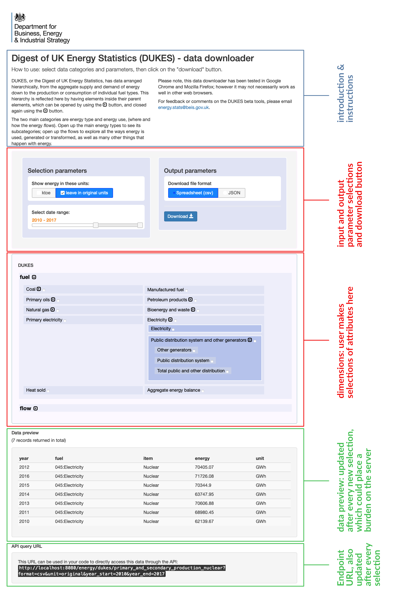

Data downloader

This is auto-generated based on all the dimension trees that are relevant to the data set. The UI is generated by traversing each tree and creating a nested interface. It is not implemented recursively and therefore can only handle a few layers down the tree. It is questionable whether excessive embedding would make for a pleasant UI; fortunately the trees seen so far are not too deep so this problem may not present itself.
Features
- private call to tree-endpoints
- self-building UI
- how to modify for new datasets
- previewing data (and what is happening in the background)